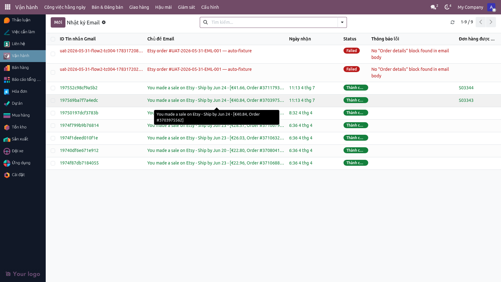
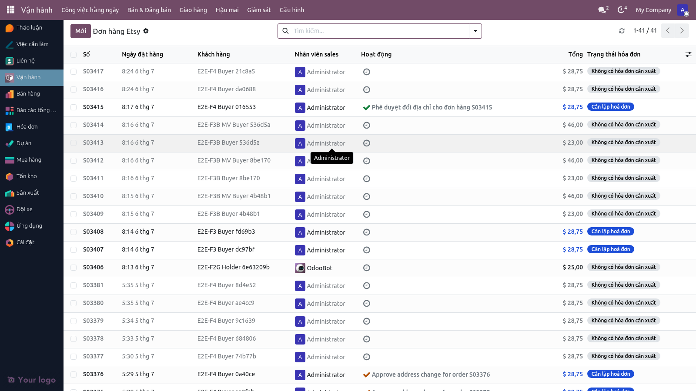
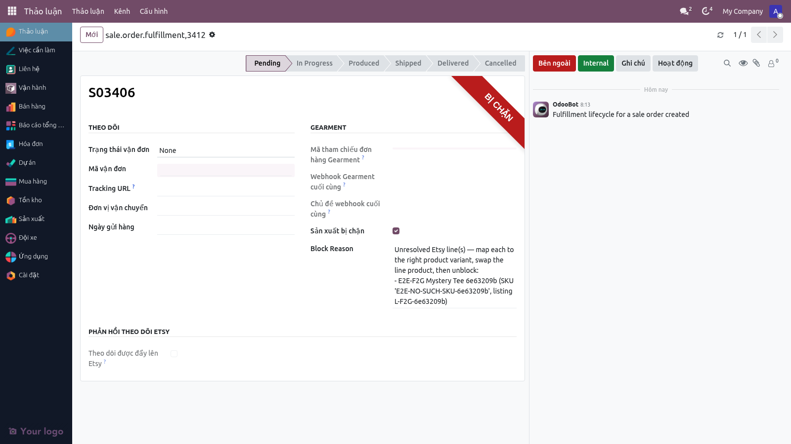
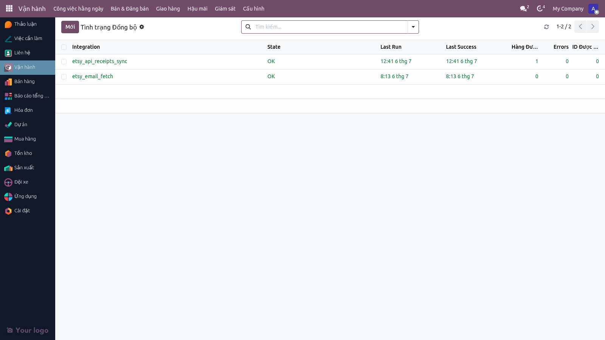
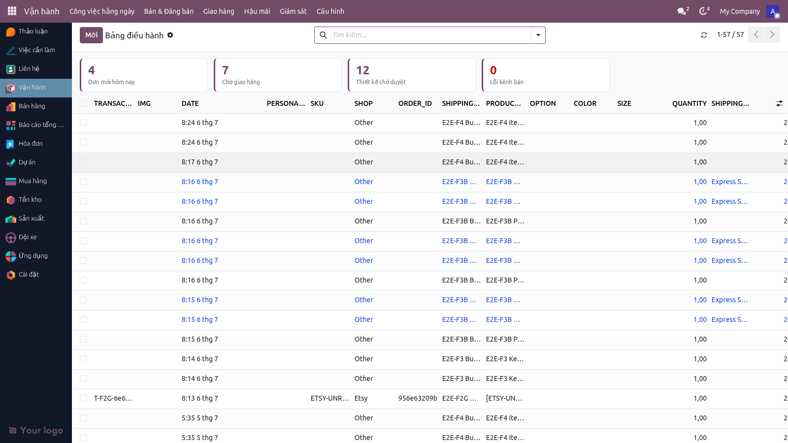
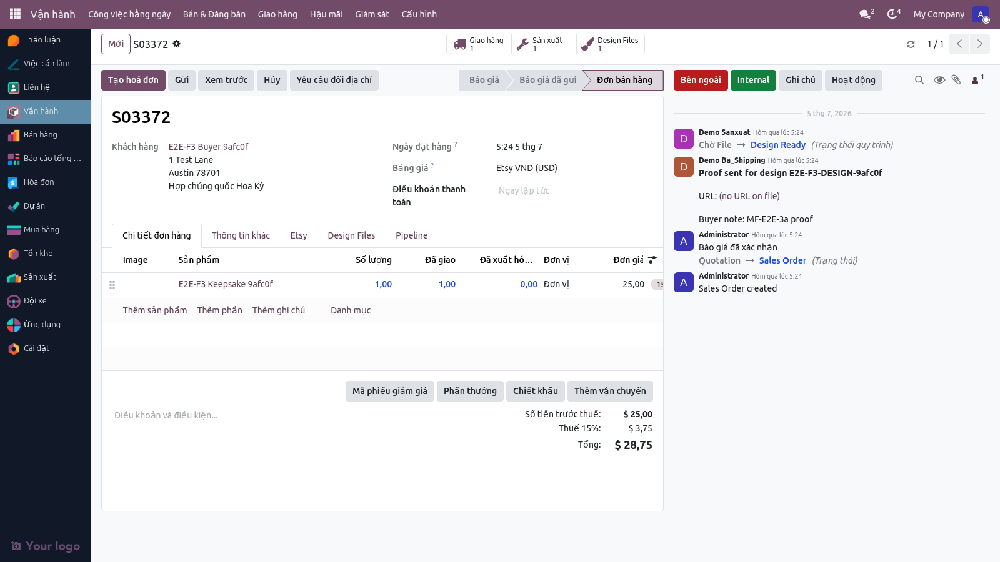

Đơn từ Etsy tự về Odoo mỗi 10 phút qua email parsing hoặc webhook. Hệ thống đối chiếu khách tự động, tạo Sale Order, và hiển thị trên Bảng điều hành với bốn thẻ KPI lớn: Đơn mới hôm nay, Chờ giao hàng, Thiết kế chờ duyệt, Lỗi kênh bán.
Hoàn tấtĐọc ~12 phút
ASơ đồ vai trò (Swimlane)
Etsy Shop
Hệ thống Odoo
BA Lead
Bước 1
Khách đặt hàng
Poll API mỗi 10 phút
Bước 2
Tạo Sale Order + Partner
Bước 3
Ghi chú khách vào Chatter
Kết quả
Sale Order sẵn sàng
Mở Bảng điều hành → thấy ngay
Bước 1 — Email từ Etsy tới hệ thống (Tự động, 10 phút/lần)
Vai trò: Tự động (Cron job)
Mỗi 10 phút, hệ thống polling Etsy API để lấy đơn mới. Khi có đơn, email order notification từ Etsy được nhận và parse. Các thông tin chính được trích xuất:
Order ID (Etsy receipt_id)
Khách: Tên, Email, Địa chỉ
Sản phẩm: SKU, Tên, Số lượng, Giá
Tổng giá + Phí vận chuyển + Chiết khấu
Ghi chú khách (Buyer note) nếu có

Email Log — Hệ thống ghi lại mỗi email đơn nhận được, trạng thái parse (thành công hoặc lỗi).
Bước 2 — Tạo Sale Order & Partner tự động
Menu: Vận hành ▸ Công việc hằng ngày ▸ Pipeline đơn hoặc Sale Order list
Hệ thống tự động tạo:
Đối tượng
Cách xử lý
Partner (Khách)
Nếu email khách chưa tồn tại, tạo Partner mới với tên + email + địa chỉ giao. Nếu đã tồn tại, dùng Partner cũ.
Sale Order
Tạo SO với dòng hàng (sale.order.line) cho mỗi sản phẩm trong đơn. Liên kết tới Etsy listing và shop.
Stock Move
Tự động tạo Picking (stock.picking) với trạng thái "Chờ xác nhận" để sản xuất xem.

Sale Order List — Danh sách đơn Etsy. Mỗi SO có người mua, địa chỉ, sản phẩm, và trạng thái giao hàng.
Bước 2b — Đơn bị giữ khi SKU không khớp (mới từ 06-07-2026)
Vai trò: BA Lead xử lý
Trước đây, nếu đơn Etsy chứa SKU mà Odoo không nhận ra, hệ thống tự tạo một sản phẩm mới — sản phẩm này không có mã nhà in, không có quy trình, và đơn dropship có thể bị đưa nhầm vào luồng sản xuất nội bộ. Từ nay hệ thống không tự tạo sản phẩm nữa:
Dòng hàng không khớp được ghi tạm vào sản phẩm giữ chỗ "Etsy Unresolved Item", vẫn giữ nguyên tên hàng người mua nhìn thấy.
Đơn bị chặn sản xuất (ruy băng đỏ "BỊ CHẶN") kèm lý do nêu rõ từng dòng: tên hàng, SKU, listing.
BA Lead vào form, đổi dòng hàng sang đúng biến thể sản phẩm, rồi bỏ chặn — đơn tiếp tục chạy bình thường.

Đơn bị giữ — ô "Sản xuất bị chặn" được đánh dấu, Block Reason liệt kê từng dòng hàng chưa khớp SKU để BA Lead xử lý.
Bước 3 — Cập nhật trạng thái đối soát kênh Etsy
Menu: Vận hành ▸ Bán ▸ Trạng thái kênh hoặc Sync Health
Mỗi Sale Order được liên kết tới một multichannel.channel.status record để theo dõi trạng thái đồng bộ với Etsy. Bảng "Sync Health" hiển thị:
Đơn vừa nhận từ Etsy: Trạng thái = "imported"
Đơn đang sản xuất: Trạng thái = "processing"
Đơn đã gửi hàng: Trạng thái = "fulfilled" (hệ thống tự update khi picking done)
Lỗi đồng bộ: Lỗi API 4xx/5xx được ghi lại với error message

Sync Health Dashboard — Theo dõi đơn vừa nhận, đang xử lý, đã gửi, và lỗi đồng bộ kênh Etsy.
Bước 4 — Bảng điều hành (Dashboard) — BA Lead mở lên sáng
Menu: Vận hành ▸ Công việc hằng ngày ▸ Bảng điều hành
Khi đơn đã được tạo, BA Lead mở Bảng điều hành và thấy ngay bốn thẻ số liệu (KPI band):
Thẻ
Ý nghĩa
Hành động
Đơn mới hôm nay
Tổng số SO mới nhận từ Etsy hôm nay
Nhấp để lọc danh sách SO hôm nay
Chờ giao hàng
SO đang in, QC, hoặc đóng gói (chưa gửi)
Nhấp để mở Bảng pipeline kéo-thả
Thiết kế chờ duyệt
Số SO có thiết kế cần BA/PD duyệt
Nhấp để mở Hàng chờ duyệt thiết kế
Lỗi kênh bán
Số SO có lỗi đồng bộ Etsy hoặc kiểm soát giá
Nhấp để xem chi tiết lỗi

Bảng điều hành (Operations Dashboard) — Bốn thẻ KPI lớn giúp BA Lead nhìn thấy ngay công việc cần ưu tiên hôm nay.
Bước 5 — Xem chi tiết đơn
Form: Sale Order form → Tất cả thông tin
Trên form SO, BA Lead hoặc người bán hàng có thể:
Xem địa chỉ giao: Tab "Shipping" hiển thị tên, SĐT, quận/huyện, từ Etsy.
Xem ghi chú khách: Tab "Chatter" ghi lại buyer note từ Etsy.
Xem sản phẩm & giá: Tab "Order Lines" liệt kê mỗi item, SKU, số lượng, đơn giá.
Xem lỗi nếu có: Nếu parse email thất bại hoặc Etsy API lỗi, sẽ có thông báo cảnh báo.

Sale Order Form — Đơn từ Etsy với tất cả thông tin khách, địa chỉ, sản phẩm, giá.
iGhi chú cho BA & Quản trị viên
Cron job polling Etsy 10 phút/lần. Nếu muốn nhận ngay, bấm nút "Manual Sync" trên form cửa hàng Etsy.
Email từ Etsy thường chứa tất cả thông tin cần thiết, nhưng nếu SKU không tìm thấy trên Odoo, đơn được giữ lại với lý do rõ ràng (xem Bước 2b) — hệ thống không còn tự tạo sản phẩm mới.
Buyer note (ghi chú khách) được ghi vào Chatter SO để mọi người có thể thấy. Ví dụ: "Bản in bằng vải dù, không có lót".
Nếu khách chưa từng mua: Hệ thống tự tạo Partner mới với email và địa chỉ từ Etsy. Bạn có thể sau đó merge nếu phát hiện trùng khách.
Etsy tiền tệ: SO tính giá bằng VND (hoặc tiền tệ shop), nhưng Etsy API trả USD. Hệ thộng tự convert dựa trên tỉ giá ngày.